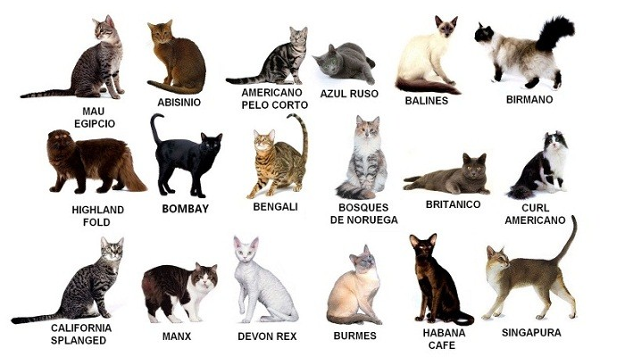

En esta página aprenderemos las diferentes razas, y también aprenderemos a distingirlos.

| Características | Azul ruso | Angora turco |
|---|---|---|
| Tipo | Grácil, esbelto y elegante | Tamaño mediano |
| Cuerpo | Alargado | Largo de huesos finos |
| Pelaje | Corto, denso, muy fino | Semilargo, pelo fino |